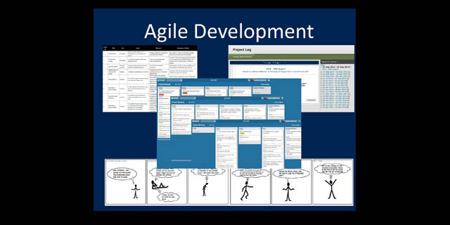
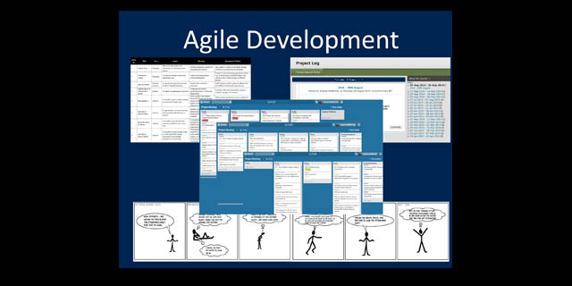
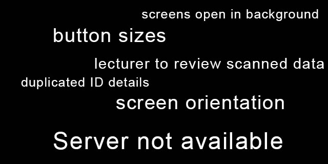
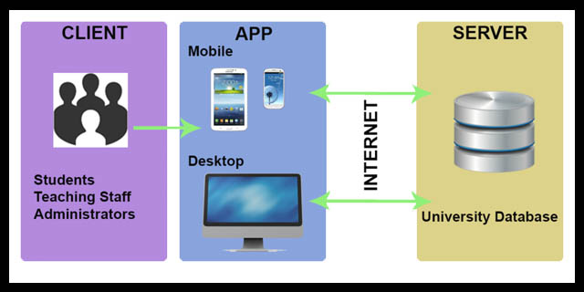
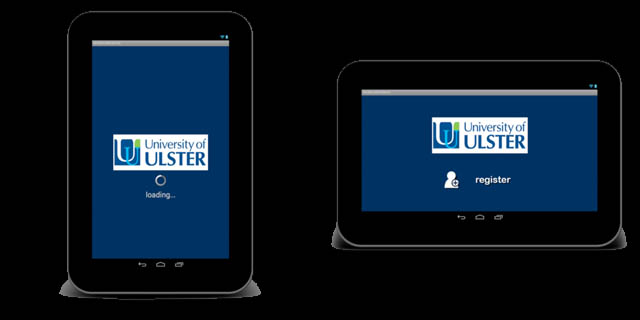
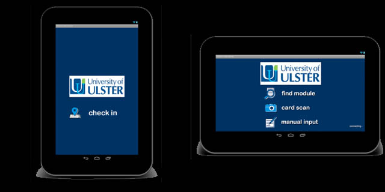
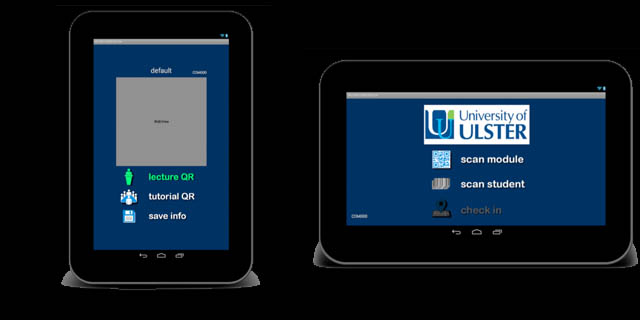
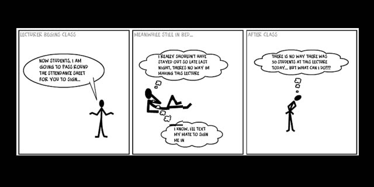
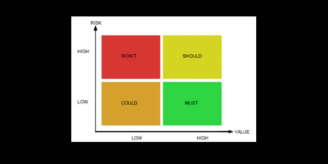
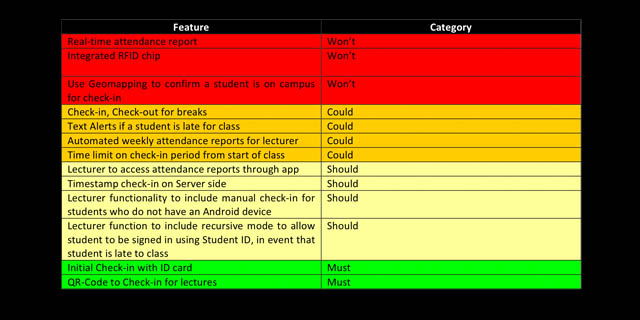

coderwurst
mobile applications
client presentation
A Keynote presentation was put together with 3 main goals:
- describe the purpose behind the app
- live demonstration of all app features
- outline the technologies used, describe implementation
A lot of time was left at the end for questions and answers, which actually took place right in the middle of the presentation. As the 3 markers got to try the app, each started to ask their own questions regarding how it works. One question lead into another and kept going for nearly 30 minutes. I think next time I would plan this into the presentation - as it makes more sense to answer all questions at once, and the natural break in presenting allowed for the questions to be asked and answered in a casually.
 

testing
After a number of unit and user tests, the codebase was further updated and developed to include some suggestions or resolve bugs discovered in the development process. Unit testing made use of the debugger and console log functionality in Android. Using meaningful error log messages, it was possible to determine exactly what information had been passed between the server and the app. With the help if this and the debugger, the source of problems could be found and resolved efficiently.

Despite constant user testing at all stages of development, many cracks in the software only started to appear once the prototype was tested by other users. A selection of ages, gender and career backgrounds was specifically chosen to cover the widest range of user possibilities when choosing the test subjects. Most of the feedback included aesthetic changes to make the app more usable for those not familiar with it. Other technical issues were also found as this was the first time that the architecture was really tested, for example when scanning 10 - 15 student IDs at once which created a problem with sending the information one at a time to the server and the time it took the device to process the next ID. All outlined issues were overcome before the final presentation.
design implementation
The total coding for this project lasted 12 weeks from initial project through to completion. Throughout this time there were numerous challenges, which were only efficiently overcome after the implementation of console log statements allowing the developer to effectively establish where the problems where in the code and therefore implement the appropriate solution.Communication between the app and the database was the biggest challenge, with the sequence of operations proving to be a vital component in the overall operation of the app. Once the data was transferred, the scripts and code could be debugged through the respective IDE's - IntelliJ and MySQLWorkbench.
architectural design
Having looked at the front end of the app, it was now time to nail down the details of how the different components would work. On the back end is a fairly simple but powerful database, to hold student and staff IDs, QR-Codes for classes across the campus and the check-in information updated each time a student uses the app to register attendance.An extra feature added to the Database was the timestamp, to record the time that a student checked in at this end rather than using the device clock - which could be manipulated by cunning students.
In the middle, AJAX was the chosen method of communication between the app, installed on a mobile device, and the database. Ajax requests could be sent to and from the device and database, with PHP scripts on the back end performing the functionality, and Android code in the app on the client side.
ui design
Wireframe diagrams showing possibilities for button layout were developed with 2 things in mind: 1) Keeping the number of buttons to a minimum, especially in the case of the student user so that only a minimal amount of effort would be needed to operate the app, and 2) Each function provided by the app should be no more than 3 button clicks away from the main screen. The second of these 2 approaches being a common technique in the development of web sites.The Student UI was a lot easier to design, as they only had 2 screens, one to initially register on the device (which is also used for lecturer users) and a second screen to provide a button with which the student could check into a class with by opening the QR-Code scanner.
The Lecturer UI needed a lot more time and thought, from the naming of the buttons to the layout on screen to allow the user access to functionality without cluttering the screen so much which would then become cumbersome on smaller mobile devices. As well as the main screen, a total of 3 other screens were also included - one for displaying QR-Codes for chosen classes, another for registering a number of students as attending all at once and a third to manually enter the details of any students' who had forgotten their student card with the necessary barcode to be scanned in automatically.


initial investigations
Storyboards of the current situation where drawn u in order to outline the exact problems being faced with the current attendance recording system - as well as students avoiding class, there were also instances of the lecturer or university staff misplacing the attendance sheet, or misreading the information as details were transferred from the sheet and onto the attendance database. A study was conducted into the best platform to solve the problem, the sales numbers for iOS, Android and Windows Phone were compared as well as app store downloads and purchases. The Android OS towards the end of 2013 made up around 80% of the smartphone market... Apple came in second at 16%, with Microsoft at around 4%. As this was to be a native designed application - Android provided the greatest coverage in terms of making my app accessible for the greatest number of users.
The study also identified that free apps make up 95% of all app store purchases, in all app stores. The Android store posted revenues of $9 billion in 2013 and 2014. Not bad considering that 95% of app downloads are free! As this is only a side project, revenue is not an important design factor - but it is good to bear this in mind, should the project take a more commercial route in the future.
Final preparations where made in the creation of the development environment. IntelliJ IDE was chosen for its better usability and flexibility - Eclipse is the industry standard, but I have never understood why. Anyone who takes the time to develop at least one project with IntelliJ will know that it provides the much more professional, complete product - even the community edition that is available free of charge.
After completing the initial investigations, a MoSCoW list was put together to outline the project objectives in a tangible form, this will be referred throughout the project in the creation of Agile project scripts and also when creating usability testing scripts to validate that the end product satisfies the initial objectives.

idea
Student attendance is a key measure that Universities use to predict student performance, and is also an early indicator of potential drop outs on any course - the less a student attends, the more a student falls behind and the less likely the student will be able to catch up on his/ her peers. For this reason a University gave me the task of tackling the problem of student non-attendance with the production of a mobile application. The main problem outlined in the early design stages - students signing their friends into class, whilst their friends take a day off, are working part-time jobs or have been partying too hard and are skipping yet another class to catch up on some sleep.
Lecturers are aware of this, they are also aware of the same students who sign in late to class every week, and equally aware of those who sign in first thing only to leave at the break. They do not however, know of a way to resolve this problem in a non-confrontational manor.
If there's one thing that comes hand in hand in todays society its students and smart phones. For this reason, an app seemed the most logical platform to develop a solution to the many problems that the current paper based sign-in system in Universities use to monitor student attendance.
It is also not just the students that pose problems for accurate attendance monitoring - lecturers can forget/ loose sign-in sheets, and data can be transferred incorrectly by the administrators as they manually transfer attendance information into University Databases